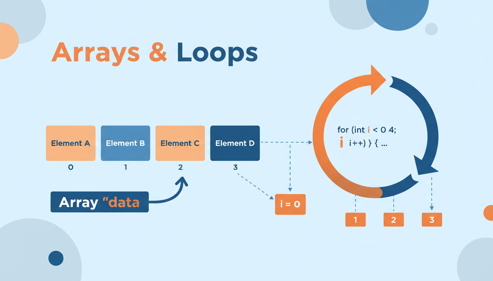

Поняття масиву
Масив — це структура даних, яка зберігає набір елементів одного типу, розміщених у пам'яті послідовно. Елементи масиву доступні за індексом.
Основні характеристики масиву:
- Фіксований розмір — розмір визначається при створенні і не змінюється
- Однотипність — всі елементи мають однаковий тип
- Індексація з нуля — перший елемент має індекс 0
- Безперервність — елементи розташовані в пам'яті послідовно

Оголошення та ініціалізація
// Оголошення масиву
тип_елементу ім'я_масиву[розмір];
int numbers[5]; // масив з 5 цілих чисел
double prices[10]; // масив з 10 дійсних чисел
char letters[26]; // масив з 26 символів
// Ініціалізація при оголошенні
int arr1[5] = {1, 2, 3, 4, 5}; // явна ініціалізація
int arr2[] = {10, 20, 30}; // розмір визначається автоматично (3)
int arr3[5] = {1, 2}; // часткова ініціалізація: {1, 2, 0, 0, 0}
int arr4[5] = {0}; // всі елементи = 0
// Доступ до елементів
int first = arr1[0]; // перший елемент (індекс 0)
int last = arr1[4]; // останній елемент (індекс 4)
arr1[2] = 100; // зміна значенняВихід за межі масиву (наприклад, доступ до arr[5] у масиві розміром 5) призводить до невизначеної поведінки. C++ не перевіряє межі масиву автоматично — це відповідальність програміста.
Введення та виведення масиву
#include <iostream>
using namespace std;
int main() {
const int SIZE = 5;
int arr[SIZE];
// Введення масиву
cout << "Введіть " << SIZE << " чисел:" << endl;
for (int i = 0; i < SIZE; i++) {
cout << "Елемент [" << i << "]: ";
cin >> arr[i];
}
// Виведення масиву
cout << "Масив: ";
for (int i = 0; i < SIZE; i++) {
cout << arr[i] << " ";
}
cout << endl;
return 0;
}Основні операції з масивами
const int N = 100;
int arr[N];
int n; // фактична кількість елементів
// Сума елементів
int sum = 0;
for (int i = 0; i < n; i++) sum += arr[i];
// Середнє арифметичне
double avg = (double)sum / n;
// Пошук максимуму
int maxVal = arr[0];
int maxIndex = 0;
for (int i = 1; i < n; i++) {
if (arr[i] > maxVal) {
maxVal = arr[i];
maxIndex = i;
}
}
// Інверсія масиву
for (int i = 0; i < n / 2; i++) {
int temp = arr[i];
arr[i] = arr[n - 1 - i];
arr[n - 1 - i] = temp;
}
// Зсув елементів вправо
int last = arr[n - 1];
for (int i = n - 1; i > 0; i--) {
arr[i] = arr[i - 1];
}
arr[0] = last;Пошук у масиві
Лінійний пошук — O(n)
int linearSearch(int arr[], int n, int key) {
for (int i = 0; i < n; i++) {
if (arr[i] == key)
return i; // повертаємо індекс
}
return -1; // не знайдено
}Бінарний пошук — O(log n) (для відсортованих масивів)
int binarySearch(int arr[], int n, int key) {
int left = 0, right = n - 1;
while (left <= right) {
int mid = left + (right - left) / 2;
if (arr[mid] == key)
return mid;
if (arr[mid] < key)
left = mid + 1;
else
right = mid - 1;
}
return -1;
}Сортування масивів
Сортування бульбашкою (Bubble Sort) — O(n²)
void bubbleSort(int arr[], int n) {
for (int i = 0; i < n - 1; i++) {
for (int j = 0; j < n - 1 - i; j++) {
if (arr[j] > arr[j + 1]) {
// обмін
int temp = arr[j];
arr[j] = arr[j + 1];
arr[j + 1] = temp;
}
}
}
}Сортування вибором (Selection Sort) — O(n²)
void selectionSort(int arr[], int n) {
for (int i = 0; i < n - 1; i++) {
int minIdx = i;
for (int j = i + 1; j < n; j++) {
if (arr[j] < arr[minIdx])
minIdx = j;
}
// обмін знайденого мінімуму з поточною позицією
int temp = arr[i];
arr[i] = arr[minIdx];
arr[minIdx] = temp;
}
}Сортування вставками (Insertion Sort) — O(n²)
void insertionSort(int arr[], int n) {
for (int i = 1; i < n; i++) {
int key = arr[i];
int j = i - 1;
while (j >= 0 && arr[j] > key) {
arr[j + 1] = arr[j];
j--;
}
arr[j + 1] = key;
}
}Масиви у функціях
При передачі масиву в функцію передається вказівник на перший елемент. Зміни в функції впливають на оригінальний масив.
// Функція, що приймає масив
void printArray(int arr[], int n) {
for (int i = 0; i < n; i++)
cout << arr[i] << " ";
cout << endl;
}
// Функція, що змінює масив (заповнює нулями)
void fillZeros(int arr[], int n) {
for (int i = 0; i < n; i++)
arr[i] = 0;
}
// Повернення максимуму
int findMax(int arr[], int n) {
int max = arr[0];
for (int i = 1; i < n; i++)
if (arr[i] > max) max = arr[i];
return max;
}
int main() {
int arr[] = {5, 2, 8, 1, 9};
int n = 5;
printArray(arr, n);
cout << "Max: " << findMax(arr, n) << endl;
return 0;
}📝 Тести для самоперевірки
💻 Практичні завдання
Напишіть функцію, яка інвертує масив (змінює порядок елементів на зворотний) без використання додаткового масиву.
Знайдіть два найбільші елементи в масиві. Елементи мають бути різними.
Реалізуйте циклічний зсув масиву на k позицій вліво та вправо. k може бути більшим за розмір масиву.
Видаліть усі дублікати з масиву. Поверніть новий розмір масиву.
Дано два відсортованих масиви. Об'єднайте їх в один відсортований масив.
Порахуйте, скільки разів кожен елемент зустрічається в масиві. Виведіть елемент та його частоту.
Знайдіть неперервний підмасив з максимальною сумою (алгоритм Кадане).
Реалізуйте інтерполяційний пошук — покращення бінарного для рівномірно розподілених даних.
Реалізуйте швидке сортування (Quick Sort) з вибором опорного елемента. Порівняйте швидкість з Bubble Sort.
Створіть модуль arrayutils з функціями: fillRandom, print, sum, average, findMax, findMin, reverse, sort, search. Оформіть як .h та .cpp файли.